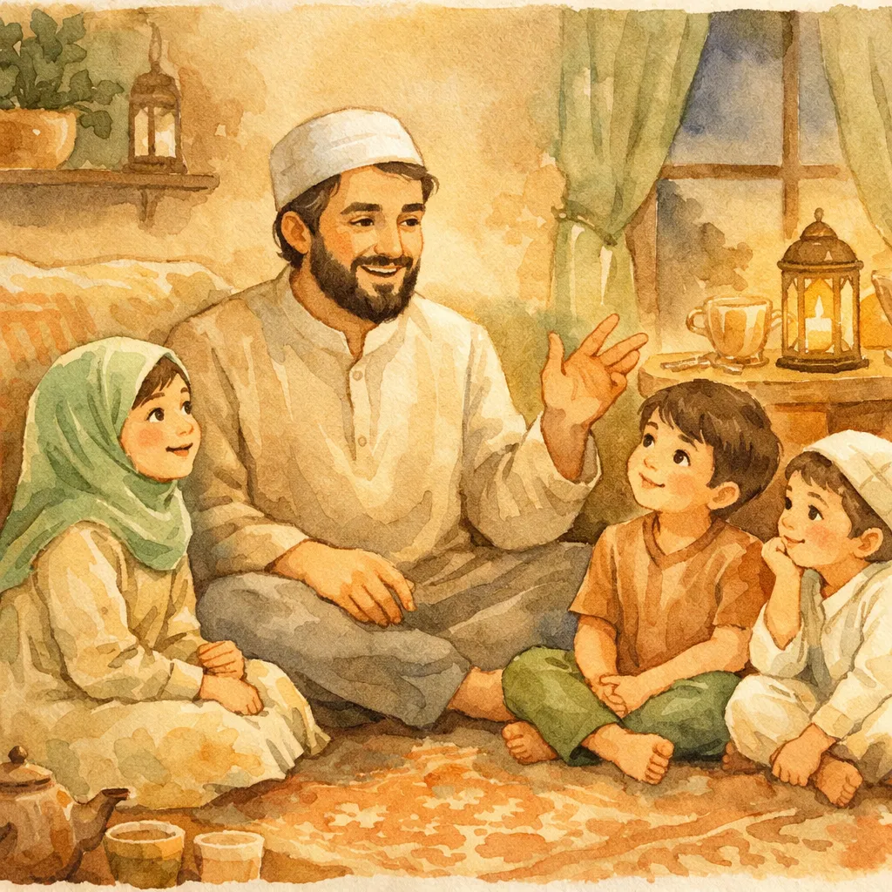
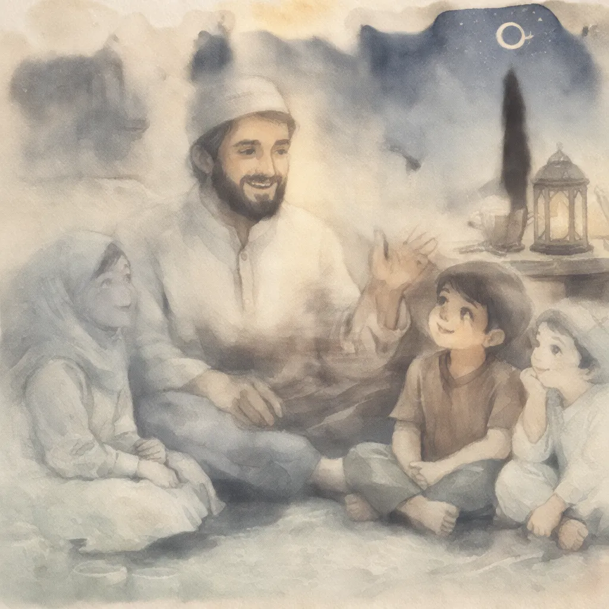

Prophet Stories for Kids: 10 Inspiring Tales Every Muslim Child Should Know
The prophets of Islam aren't distant figures from the past — they're role models for our kids. Here are the best prophet stories for kids. They're retold in ways that grab young hearts and plant seeds of faith that last a lifetime.

📖 Looking for Quran stories your kids will love?
Start Their Qur'an Journey →Every culture has heroes. Superheroes. Warriors. Legends. But as Muslim parents, we have something better: the stories of the prophets. Real people who walked this earth. They faced impossible tests and never gave up on Allah. These aren't fairy tales — they're the greatest stories ever told. The Quran saved them for us to pass down to our kids.
The thing is, many of us grew up hearing these stories in a dry way. "Prophet Ibrahim was thrown in a fire. Allah saved him. The end." No wonder kids zone out! But when you tell these prophet stories for kids the right way — with feeling, with suspense, with real connection — something magical happens. Their eyes go wide. They lean in. They ask, "And then what happened?"
That's what this guide is about: helping you bring these stories to life. (And if you're looking for a broader collection of Islamic stories for kids, we've got you covered too.)
Why Prophet Stories Are the Foundation of Islamic Education
Allah didn't just give us rules. He gave us stories. The Quran says: "We relate to you the best of stories" (Surah Yusuf, 12:3). There's a reason for that — stories skip past the thinking mind and go straight to the heart.
When your child hears about Prophet Yusuf being thrown into a dark well by his own brothers, they don't just learn about patience. They feel it. When they hear about Prophet Musa standing before Pharaoh with nothing but a staff and the truth, they see what courage looks like. Learning through feeling is the strongest kind there is.
Prophet stories for kids also solve a real problem: they give kids Islamic role models. In a world full of Marvel heroes and Disney princesses, our kids need real heroes. People who were brave and kind and strong — and who actually lived.
The 10 Best Prophet Stories for Kids
Here are the stories that resonate most with kids, organized so you can pick the right one for the right moment.
1. Prophet Adam — The Very First Human
Best for ages: 3+
Start at the very beginning. Tell your kids how Allah created Adam from clay with His own hands. He taught him the names of everything. Then He asked the angels to bow before him. All the angels obeyed — except Iblis, who was too proud.
Then comes the garden, the forbidden tree, and the mistake. Here's the key part — the repentance. Adam and Hawwa didn't hide from their mistake. They turned back to Allah: "Our Lord, we have wronged ourselves. If You do not forgive us, we will surely be among the losers."
💚 The Lesson
Everyone makes mistakes — even the very first human. What matters is turning back to Allah and asking for forgiveness. Pride (like Iblis) is what destroys you, not mistakes.
2. Prophet Nuh — The Man Who Never Gave Up
Best for ages: 4+
Nine hundred and fifty years. That's how long Prophet Nuh called his people to believe in Allah. Can your kids imagine being patient for that long? Almost nobody listened. They laughed at him. They plugged their ears. They covered their faces.
But Nuh never stopped. Then Allah told him to build an enormous ark — in the middle of the desert, far from any ocean. People thought he'd lost his mind. But when the skies opened and the water rose, Nuh and the believers were safe in the ark, along with pairs of every animal on earth.
💚 The Lesson
Never give up on doing what's right, even if everyone laughs at you. And always trust Allah's plan, even when it doesn't make sense to the people around you.
3. Prophet Ibrahim — The Brave Friend of Allah
Best for ages: 5+
Ibrahim's story is an epic with many parts. It's perfect for telling over several nights. Start with young Ibrahim looking at the stars, the moon, and the sun. He realized none of them could be God because they all set and disappear. "I turn my face to the One who created the heavens and the earth."
Then tell them how he smashed his father's idols to prove they were powerless. How the people threw him into a massive fire — and Allah commanded: "O fire, be cool and safe for Ibrahim." He walked out without a single burn.
For older kids, share the biggest test: when Allah asked Ibrahim to sacrifice his beloved son Ismail. Both father and son obeyed completely. At the last moment, Allah replaced Ismail with a ram. This is why we celebrate Eid al-Adha.
💚 The Lesson
Think for yourself. Stand up for truth even when you're alone. And trust Allah completely — He will never let you down.
4. Prophet Yusuf — The Most Beautiful Story
Best for ages: 6+
Allah Himself calls this "the best of stories" in the Quran. It has everything: jealousy, betrayal, a dark well, slavery, false blame, prison, dreams coming true, and the most beautiful forgiveness you've ever heard.
Tell it in parts. Night one: young Yusuf's dream of eleven stars, the sun, and the moon bowing to him. His father Ya'qub warns him not to tell his brothers. Night two: the brothers' jealousy, the well, and the caravan that finds him. Night three: his life in Egypt and prison. Night four: reading the king's dream and becoming minister of Egypt. Night five: his brothers come for food, the reunion, and Yusuf's amazing words: "No blame upon you today. Allah will forgive you."
💚 The Lesson
Allah's plan is always bigger than our pain. Stay patient, stay good, and forgive — even those who hurt you deeply. Everything happens for a reason.
5. Prophet Musa — Standing Up to a Tyrant
Best for ages: 5+
Musa's story begins with a miracle. His mother was terrified that Pharaoh would kill her baby. She placed him in a basket in the river. Allah guided that basket right to Pharaoh's palace — and baby Musa was raised by the very man who wanted to destroy him.
Years later, Allah speaks to Musa from a burning bush and gives him a mission: go back to Pharaoh and demand freedom for the Israelites. Musa was afraid — he had a stutter, and Pharaoh was the most powerful man on earth. But Allah said: "Do not fear. I am with you. I hear and I see."
The plagues, the staff turning into a serpent, and finally — the sea parting in two as Musa led his people to freedom. Absolute cinema.
💚 The Lesson
You don't have to be "perfect" to do great things. Musa had a stutter and was scared. But with Allah's help, he stood up to the most powerful ruler on earth.

6. Prophet Yunus — Inside the Whale
Best for ages: 4+
Kids go absolutely wild for this one. Prophet Yunus was sent to a city of people who refused to listen. Frustrated, he left before Allah gave him permission. He boarded a ship, a storm hit, and the passengers drew lots to throw someone overboard to lighten the load. Yunus's name came up.
He was swallowed by an enormous whale. In the pitch-black belly of the whale, at the bottom of the ocean, Yunus cried out: "There is no God but You. Glory be to You. I was among the wrongdoers." Allah heard him, and the whale spat him out onto the shore.
💚 The Lesson
No matter how dark things get, Allah always hears you. And when you make a mistake, own it and turn back to Him. That du'a — "La ilaha illa anta, subhanaka, inni kuntu minaz-zalimin" — is one of the most powerful supplications in Islam.
7. Prophet Sulaiman — The King Who Talked to Animals
Best for ages: 3+
Allah gave Prophet Sulaiman gifts that sound straight out of a fantasy novel. He could talk to animals and command the wind. He even had jinn working for him. But here's what makes his story special — he never became arrogant about any of it.
Tell your kids about the time he was marching with his vast army and heard a tiny ant warning the other ants: "Go into your homes so Sulaiman and his soldiers don't crush you without knowing it!" Sulaiman smiled and laughed, then thanked Allah for this gift. A mighty king, grateful for understanding the words of an ant.
And the story of the Hoopoe bird who brought news of the Queen of Sheba and her people worshipping the sun — leading to one of the most dramatic diplomatic encounters in the Quran.
💚 The Lesson
Power and blessings should make you more grateful, not more arrogant. Be kind to every creature — even the smallest ant matters to Allah.
8. Prophet Isa — The Miracle Baby Who Spoke
Best for ages: 6+
Start with his mother Maryam. She was so devoted to Allah that angels brought her food. When she was told she would have a son through a miracle from Allah, she was afraid of what people would say.
Alone and in pain, she gave birth under a palm tree. Allah told her to shake the tree for fresh dates. When she brought baby Isa to her people and they accused her, the newborn baby spoke from the cradle: "I am a servant of Allah. He has given me the Scripture and made me a prophet."
Prophet Isa went on to heal the blind, cure the sick, and bring a clay bird to life — all by Allah's permission. He's one of the mightiest prophets, and Muslims love and honor him deeply.
💚 The Lesson
Allah defends those who are sincere. Miracles happen when He wills. And strong women like Maryam are honored in the highest way in Islam.
9. Prophet Ayyub — Patience Beyond Imagination
Best for ages: 7+
Prophet Ayyub had everything — wealth and health and a beautiful family. Then Allah tested him. He lost his money. He lost his kids. He became so sick that his skin was covered in wounds and people avoided him. Even his friends abandoned him.
But Ayyub never complained about Allah. Not once. After years of suffering, he simply said: "Harm has touched me, and You are the Most Merciful of the merciful." Allah restored everything — his health, his family, and even more wealth than before.
💚 The Lesson
True patience isn't pretending nothing is wrong. It's hurting deeply but never losing faith in Allah. And Allah always rewards those who are patient — always.
10. Prophet Muhammad ﷺ — The Mercy to All Worlds
Best for ages: 3+ (adapt depth by age)
Save this for the story you tell most often, because it's the most important. Our Prophet's life is an ocean — you could tell a different story every night for years.
For little ones, start simple. Tell them how he was kind to animals. How he played with kids. How he smiled so much that his face shone brighter than the full moon. Tell them about the cat that fell asleep on his robe. He cut the robe rather than wake it.
For older kids, share his orphanhood and his truthfulness (al-Amin — the trustworthy). Tell them about the first revelation in the cave of Hira. Share the persecution in Makkah and the migration to Madinah. Then the conquest of Makkah — when he forgave the very people who had hurt him.
And don't forget the night journey (Isra and Mi'raj) — when he traveled from Makkah to Jerusalem to the seven heavens in a single night, meeting all the previous prophets and receiving the gift of prayer.
💚 The Lesson
Mercy wins. Kindness wins. Forgiveness wins. The greatest human who ever lived was defined not by power, but by compassion.
How to Tell Prophet Stories by Age Group
Not every version of a story works for every age. Here's how to adapt:
Ages 2-4: Keep It Simple
One character, one event, one lesson. "Prophet Sulaiman could talk to animals! He heard a tiny ant and he smiled." Use animated voices. Use their stuffed animals as props. Keep it under 3 minutes.
Ages 5-7: Build the Story
Now they can follow a plot. Add tension: "The people were so angry at Ibrahim, they built a huge fire — the biggest fire anyone had ever seen! And they threw him right in!" Pause dramatically. Ask: "What do you think happened?" Then deliver the miracle.
Ages 8-10: Go Deeper
Connect lessons to their lives. After telling Yusuf's story: "Has anyone ever been unfair to you? How did you handle it? What would Yusuf do?" At this age, they can also handle multi-night story arcs. Tell Musa's story across a whole week.
Ages 11+: Explore the Wisdom
Discuss the why. Why did Allah test Ayyub so severely? What does Ibrahim's willingness to sacrifice Ismail teach us about surrender to Allah? How does Musa's fear before confronting Pharaoh relate to the challenges they face? Let them question, debate, and discover.
Making Prophet Stories Part of Daily Life
The real magic of prophet stories for kids isn't in a single storytime session — it's when these stories become a living part of how your family thinks and talks.
- Bedtime routine: One prophet story before sleep. Rotate through different prophets each week. (Here are seven perfect bedtime Quran stories to get started.)
- In the moment: When your child faces a bully, mention Prophet Muhammad's forgiveness. When they're scared of something new, recall Musa's fear before Pharaoh — and how Allah was with him.
- Eid connections: Before Eid al-Adha, spend a week on Ibrahim and Ismail. Before Ramadan, share stories about the Prophet's generosity in the blessed month. (Need Ramadan activity ideas? We've got those too.)
- Car conversations: Long drives are perfect. No distractions, captive audience. "Hey, want to hear about the time a prophet got swallowed by a whale?"
- After salah: A 2-minute story after Maghrib prayer creates a beautiful ritual. (And if you're working on building the prayer habit itself, stories are great motivation.)
Common Mistakes Parents Make with Prophet Stories
Even with the best intentions, there are pitfalls to avoid:
❌ Turning it into a lecture
"And the moral of the story is..." No. Let the story speak for itself. Kids are smart — they'll absorb the lesson without you spelling it out every single time. If you must discuss it, ask a question instead: "Why do you think Yusuf forgave his brothers?"
❌ Using stories as punishment
"You're being bad! Do you want to end up like the people of Nuh?" This creates a negative association with Islamic stories. Instead, use stories to inspire, not threaten. "You know who was really patient even when things were tough? Prophet Ayyub..."
❌ Only telling "miracle" parts
Yes, the sea parting and the fire becoming cool are amazing. But the real power is in the human moments. Musa's fear. Yusuf's loneliness. The Prophet's grief when Khadijah died. These moments teach kids that prophets were human. They struggled and felt pain and relied on Allah. That's what makes them relatable.
Resources for Islamic Prophet Stories for Kids
You don't have to do all the storytelling from memory. Here are some beautiful resources:
- With pictures books: "My First Book About the Prophets" by Sara Khan, "Goodnight Stories from the Quran" by Saniyasnain Khan, and "The Prophets of Islam" activity book series are all excellent starting points.
- Audio stories: Search for "prophet stories for kids" on YouTube or podcast apps. Preview first for quality and accuracy.
- Interactive apps: Our own Islamic Stories for Kids collection features beautifully illustrated prophet stories designed especially for young readers.
- The Quran itself: For older kids, read Surah Yusuf together. It's the only surah that tells one complete story from start to finish. Start at ayah 4 and read it in a good English translation, pausing to explain as you go.
The Gift That Keeps Giving
Here's what nobody tells you about sharing prophet stories for kids: it doesn't just change your kids. It changes you too. Every time you retell Prophet Yusuf's patience, you internalize it a little more yourself. Every time you describe Ibrahim's trust in Allah, your own trust deepens.
These stories are a gift from Allah — not just for kids, but for all of us. They remind us who we want to be. They connect us to a chain of faith that goes back to the very first human. They give our kids heroes who are real and lessons that are timeless.
So tonight, put the devices away. Gather your kids close. And say those magic words: "Let me tell you about a prophet..."
Watch what happens next. 💚